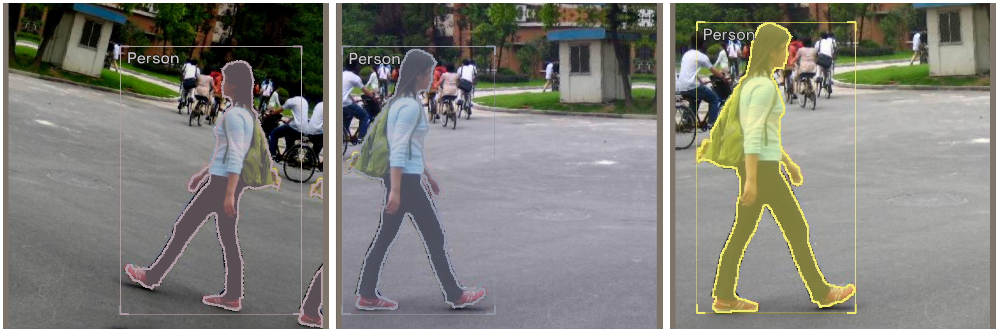
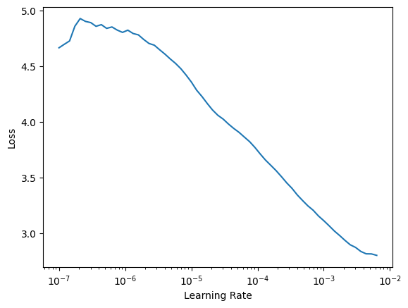

Getting Started with Instance Segmentation using IceVision
Introduction
This tutorial walk you through the different steps of training the fridge dataset. the IceVision Framework is an agnostic framework. As an illustration, we will train our model using both the fastai library, and pytorch-lightning libraries.
For more information about how the fridge dataset as well as its corresponding parser check out the pennfudan folder in icedata.
Installing IceVision and IceData
If on Colab run the following cell, else check the installation instructions
# IceVision - IceData - MMDetection - YOLO v5 Installation
# !wget https://raw.githubusercontent.com/airctic/icevision/master/install_colab.sh
# !chmod +x install_colab.sh && ./install_colab.sh
Imports
%load_ext autoreload
%autoreload 2
from icevision.all import *
Model
To create a model, we need to:
- Choose one of the models supported by IceVision
- Choose one of the backbones corresponding to a chosen model
- Determine the number of the object classes: This will be done after parsing a dataset. Check out the Parsing Section
Choose a model and backbone
TorchVision
model_type = models.torchvision.mask_rcnn
backbone = model_type.backbones.resnet18_fpn()
Datasets : Pennfudan
Fridge Objects dataset is tiny dataset that contains 134 images of 4 classes: - can, - carton, - milk bottle, - water bottle.
IceVision provides very handy methods such as loading a dataset, parsing annotations, and more.
# Loading Data
data_dir = icedata.pennfudan.load_data()
train_ds, valid_ds = icedata.pennfudan.dataset(data_dir)
0%| | 0/170 [00:00<?, ?it/s]
[1m[1mINFO [0m[1m[0m - [1m[34m[1mAutofixing records[0m[1m[34m[0m[1m[0m | [36micevision.parsers.parser[0m:[36mparse[0m:[36m122[0m
0%| | 0/170 [00:00<?, ?it/s]
Displaying the same image with different transforms
Note:
Transforms are applied lazily, meaning they are only applied when we grab (get) an item. This means that, if you have augmentation (random) transforms, each time you get the same item from the dataset you will get a slightly different version of it.
samples = [train_ds[0] for _ in range(3)]
show_samples(samples, ncols=3)

DataLoader
# DataLoaders
train_dl = model_type.train_dl(train_ds, batch_size=8, num_workers=4, shuffle=True)
valid_dl = model_type.valid_dl(valid_ds, batch_size=8, num_workers=4, shuffle=False)
infer_dl = model_type.infer_dl(valid_ds, batch_size=8, shuffle=False)
valid_batch = first(valid_dl)
infer_batch = first(infer_dl)
(valid_images, valid_labels), valid_records = valid_batch
# show batch
model_type.show_batch(first(valid_dl), ncols=4)

Model
Now that we determined the number of classes (num_classes), we can create our model object.
# TODO: Better flow for train_ds
model = model_type.model(backbone=backbone, num_classes=icedata.pennfudan.NUM_CLASSES)
Metrics
metrics = [COCOMetric(metric_type=COCOMetricType.mask)]
Training
IceVision is an agnostic framework meaning it can be plugged to other DL framework such as fastai2, and pytorch-lightning.
You could also plug to oth DL framework using your own custom code.
Training using fastai
learn = model_type.fastai.learner(dls=[train_dl, valid_dl], model=model, metrics=metrics)
learn.lr_find()
SuggestedLRs(lr_min=0.0006309573538601399, lr_steep=9.999999747378752e-06)

learn.fine_tune(20, 1e-4, freeze_epochs=1)
| epoch | train_loss | valid_loss | COCOMetric | time |
|---|---|---|---|---|
| 0 | 3.060735 | 2.167423 | 0.000000 | 00:17 |
<div>
<style>
/* Turns off some styling */
progress {
/* gets rid of default border in Firefox and Opera. */
border: none;
/* Needs to be in here for Safari polyfill so background images work as expected. */
background-size: auto;
}
.progress-bar-interrupted, .progress-bar-interrupted::-webkit-progress-bar {
background: #F44336;
}
</style>
<progress value='4' class='' max='20' style='width:300px; height:20px; vertical-align: middle;'></progress>
20.00% [4/20 01:22<05:30]
</div>
| epoch | train_loss | valid_loss | COCOMetric | time |
|---|---|---|---|---|
| 0 | 1.869391 | 1.816108 | 0.000000 | 00:20 |
| 1 | 1.750445 | 1.636558 | 0.000000 | 00:23 |
| 2 | 1.637094 | 1.441535 | 0.000000 | 00:19 |
| 3 | 1.507450 | 1.243060 | 0.000000 | 00:19 |
<div>
<style>
/* Turns off some styling */
progress {
/* gets rid of default border in Firefox and Opera. */
border: none;
/* Needs to be in here for Safari polyfill so background images work as expected. */
background-size: auto;
}
.progress-bar-interrupted, .progress-bar-interrupted::-webkit-progress-bar {
background: #F44336;
}
</style>
<progress value='1' class='' max='17' style='width:300px; height:20px; vertical-align: middle;'></progress>
5.88% [1/17 00:01<00:22]
</div>
---------------------------------------------------------------------------
KeyboardInterrupt Traceback (most recent call last)
<ipython-input-19-6b1cbbe77f9d> in <module>
----> 1 learn.fine_tune(20, 1e-4, freeze_epochs=1)
~/git/fastai/fastai/callback/schedule.py in fine_tune(self, epochs, base_lr, freeze_epochs, lr_mult, pct_start, div, **kwargs)
158 base_lr /= 2
159 self.unfreeze()
--> 160 self.fit_one_cycle(epochs, slice(base_lr/lr_mult, base_lr), pct_start=pct_start, div=div, **kwargs)
161
162 # Cell
~/git/fastai/fastai/callback/schedule.py in fit_one_cycle(self, n_epoch, lr_max, div, div_final, pct_start, wd, moms, cbs, reset_opt)
110 scheds = {'lr': combined_cos(pct_start, lr_max/div, lr_max, lr_max/div_final),
111 'mom': combined_cos(pct_start, *(self.moms if moms is None else moms))}
--> 112 self.fit(n_epoch, cbs=ParamScheduler(scheds)+L(cbs), reset_opt=reset_opt, wd=wd)
113
114 # Cell
~/git/fastai/fastai/learner.py in fit(self, n_epoch, lr, wd, cbs, reset_opt)
216 self.opt.set_hypers(lr=self.lr if lr is None else lr)
217 self.n_epoch = n_epoch
--> 218 self._with_events(self._do_fit, 'fit', CancelFitException, self._end_cleanup)
219
220 def _end_cleanup(self): self.dl,self.xb,self.yb,self.pred,self.loss = None,(None,),(None,),None,None
~/git/fastai/fastai/learner.py in _with_events(self, f, event_type, ex, final)
158
159 def _with_events(self, f, event_type, ex, final=noop):
--> 160 try: self(f'before_{event_type}'); f()
161 except ex: self(f'after_cancel_{event_type}')
162 self(f'after_{event_type}'); final()
~/git/fastai/fastai/learner.py in _do_fit(self)
207 for epoch in range(self.n_epoch):
208 self.epoch=epoch
--> 209 self._with_events(self._do_epoch, 'epoch', CancelEpochException)
210
211 def fit(self, n_epoch, lr=None, wd=None, cbs=None, reset_opt=False):
~/git/fastai/fastai/learner.py in _with_events(self, f, event_type, ex, final)
158
159 def _with_events(self, f, event_type, ex, final=noop):
--> 160 try: self(f'before_{event_type}'); f()
161 except ex: self(f'after_cancel_{event_type}')
162 self(f'after_{event_type}'); final()
~/git/fastai/fastai/learner.py in _do_epoch(self)
201
202 def _do_epoch(self):
--> 203 self._do_epoch_train()
204 self._do_epoch_validate()
205
~/git/fastai/fastai/learner.py in _do_epoch_train(self)
193 def _do_epoch_train(self):
194 self.dl = self.dls.train
--> 195 self._with_events(self.all_batches, 'train', CancelTrainException)
196
197 def _do_epoch_validate(self, ds_idx=1, dl=None):
~/git/fastai/fastai/learner.py in _with_events(self, f, event_type, ex, final)
158
159 def _with_events(self, f, event_type, ex, final=noop):
--> 160 try: self(f'before_{event_type}'); f()
161 except ex: self(f'after_cancel_{event_type}')
162 self(f'after_{event_type}'); final()
~/git/fastai/fastai/learner.py in all_batches(self)
164 def all_batches(self):
165 self.n_iter = len(self.dl)
--> 166 for o in enumerate(self.dl): self.one_batch(*o)
167
168 def _do_one_batch(self):
~/git/fastai/fastai/data/load.py in __iter__(self)
107 self.before_iter()
108 self.__idxs=self.get_idxs() # called in context of main process (not workers/subprocesses)
--> 109 for b in _loaders[self.fake_l.num_workers==0](self.fake_l):
110 if self.device is not None: b = to_device(b, self.device)
111 yield self.after_batch(b)
~/miniconda3/envs/icedl-dev/lib/python3.7/site-packages/torch/utils/data/dataloader.py in __next__(self)
515 if self._sampler_iter is None:
516 self._reset()
--> 517 data = self._next_data()
518 self._num_yielded += 1
519 if self._dataset_kind == _DatasetKind.Iterable and \
~/miniconda3/envs/icedl-dev/lib/python3.7/site-packages/torch/utils/data/dataloader.py in _next_data(self)
1180
1181 assert not self._shutdown and self._tasks_outstanding > 0
-> 1182 idx, data = self._get_data()
1183 self._tasks_outstanding -= 1
1184 if self._dataset_kind == _DatasetKind.Iterable:
~/miniconda3/envs/icedl-dev/lib/python3.7/site-packages/torch/utils/data/dataloader.py in _get_data(self)
1146 else:
1147 while True:
-> 1148 success, data = self._try_get_data()
1149 if success:
1150 return data
~/miniconda3/envs/icedl-dev/lib/python3.7/site-packages/torch/utils/data/dataloader.py in _try_get_data(self, timeout)
984 # (bool: whether successfully get data, any: data if successful else None)
985 try:
--> 986 data = self._data_queue.get(timeout=timeout)
987 return (True, data)
988 except Exception as e:
~/miniconda3/envs/icedl-dev/lib/python3.7/multiprocessing/queues.py in get(self, block, timeout)
111 self._rlock.release()
112 # unserialize the data after having released the lock
--> 113 return _ForkingPickler.loads(res)
114
115 def qsize(self):
~/miniconda3/envs/icedl-dev/lib/python3.7/site-packages/torch/multiprocessing/reductions.py in rebuild_storage_fd(cls, df, size)
280
281 def rebuild_storage_fd(cls, df, size):
--> 282 fd = df.detach()
283 try:
284 storage = storage_from_cache(cls, fd_id(fd))
~/miniconda3/envs/icedl-dev/lib/python3.7/multiprocessing/resource_sharer.py in detach(self)
55 def detach(self):
56 '''Get the fd. This should only be called once.'''
---> 57 with _resource_sharer.get_connection(self._id) as conn:
58 return reduction.recv_handle(conn)
59
~/miniconda3/envs/icedl-dev/lib/python3.7/multiprocessing/resource_sharer.py in get_connection(ident)
85 from .connection import Client
86 address, key = ident
---> 87 c = Client(address, authkey=process.current_process().authkey)
88 c.send((key, os.getpid()))
89 return c
~/miniconda3/envs/icedl-dev/lib/python3.7/multiprocessing/connection.py in Client(address, family, authkey)
496
497 if authkey is not None:
--> 498 answer_challenge(c, authkey)
499 deliver_challenge(c, authkey)
500
~/miniconda3/envs/icedl-dev/lib/python3.7/multiprocessing/connection.py in answer_challenge(connection, authkey)
744 message = message[len(CHALLENGE):]
745 digest = hmac.new(authkey, message, 'md5').digest()
--> 746 connection.send_bytes(digest)
747 response = connection.recv_bytes(256) # reject large message
748 if response != WELCOME:
~/miniconda3/envs/icedl-dev/lib/python3.7/multiprocessing/connection.py in send_bytes(self, buf, offset, size)
198 elif offset + size > n:
199 raise ValueError("buffer length < offset + size")
--> 200 self._send_bytes(m[offset:offset + size])
201
202 def send(self, obj):
~/miniconda3/envs/icedl-dev/lib/python3.7/multiprocessing/connection.py in _send_bytes(self, buf)
402 # Also note we want to avoid sending a 0-length buffer separately,
403 # to avoid "broken pipe" errors if the other end closed the pipe.
--> 404 self._send(header + buf)
405
406 def _recv_bytes(self, maxsize=None):
~/miniconda3/envs/icedl-dev/lib/python3.7/multiprocessing/connection.py in _send(self, buf, write)
366 remaining = len(buf)
367 while True:
--> 368 n = write(self._handle, buf)
369 remaining -= n
370 if remaining == 0:
KeyboardInterrupt:
class LightModel(model_type.lightning.ModelAdapter):
def configure_optimizers(self):
return SGD(self.parameters(), lr=1e-4)
light_model = LightModel(model, metrics=metrics)
trainer = pl.Trainer(max_epochs=20, gpus=1)
trainer.fit(light_model, train_dl, valid_dl)
model_type.show_results(model, valid_ds, detection_threshold=.5)
batch, records = first(valid_dl)
infer_dl = model_type.infer_dl(valid_ds, batch_size=4, shuffle=False)
preds = model_type.predict_from_dl(model, infer_dl, keep_images=True)
show_preds(preds=preds[:4], ncols=3)
0%| | 0/9 [00:00<?, ?it/s]
---------------------------------------------------------------------------
TypeError Traceback (most recent call last)
<ipython-input-44-0404657b7fb5> in <module>
----> 1 show_preds(preds=preds[:4], ncols=3)
~/git/icevision/icevision/visualize/show_data.py in show_preds(preds, denormalize_fn, display_label, display_bbox, display_mask, figsize, show, annotations, ncols, **draw_sample_kwargs)
210 figsize=figsize or (6, 6 * len(preds) / 2 / 0.75),
211 show=show,
--> 212 axs_per_iter=2,
213 )
~/git/icevision/icevision/utils/imageio.py in plot_grid(fs, ncols, figsize, show, axs_per_iter, **kwargs)
94
95 for f, ax in zip(fs, axs):
---> 96 f(ax=ax)
97
98 plt.tight_layout()
~/git/icevision/icevision/imports.py in __call__(self, *args, **kwargs)
84
85 def __call__(self, *args, **kwargs):
---> 86 return self._partial(*args, **kwargs)
87
88 def __str__(self):
~/git/icevision/icevision/visualize/show_data.py in show_pred(pred, denormalize_fn, display_label, display_bbox, display_mask, show, ax, figsize, annotation, **draw_sample_kwargs)
83 display_bbox=display_bbox,
84 display_mask=display_mask,
---> 85 denormalize_fn=denormalize_fn,
86 )
87
~/git/icevision/icevision/visualize/draw_data.py in draw_sample(sample, class_map, denormalize_fn, display_label, display_bbox, display_score, display_mask, display_keypoints, font_path, font_size, label_color, label_border_color, label_thin_border, label_pad_width_factor, label_pad_height_factor, mask_blend, mask_border_thickness, color_map, prettify, prettify_func, return_as_pil_img, exclude_labels, include_only, multiple_classification_spacing_factor, dynamic_font_size_div_factor, include_classification_task_names, include_instances_task_names)
121 masks,
122 getattr(composite, "keypoints", []),
--> 123 getattr(composite, "scores", []),
124 ):
125 # random color by default
TypeError: zip_longest argument #3 must support iteration